リズムで遊ぼう
音符に沿って自分で音を定義するプログラムです！！！ そもそもは、用意された音符を使い、自分で短いリズムをつくるものなのですが、 このプログラムに、新しく音符のスプライトを用意し、プログラミングすることで、作るリズムの幅を広げることができます。
プログラムするスプライト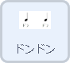 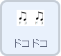 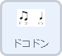 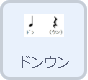 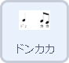 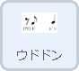 |
|
| 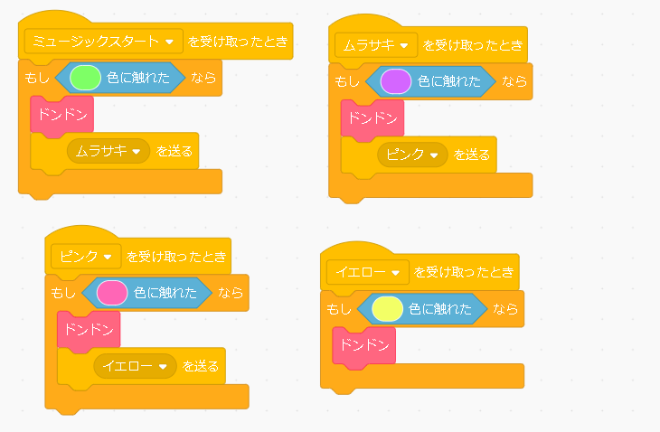 |
新しく音符のスプライトを作成するにあたって、すでにある音符のスプライトの仕組みを理解しましょう。 まずは、並べた音符を並べた順に音を鳴らす方法です。左のプログラムは音符のスプライトすべてにプログラムされています。 |
| 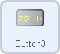 | |
| 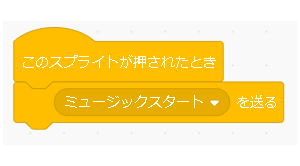 |
音符を並べ終わった後に、スタートボタンを押して音楽が流れ始めるので、スタートボタンにこのようなブロックを置きます。 スタートを押すと、ミュージックスタートというメッセージを送ります。 これがスタートのきっかけなのですが、 どの矢印の色にどの音符がのっているかを判別するために、 自分（音符のブロック）が何色に触れているかで判別します。 そのため、〇色に触れたら、ドンドンと鳴らすようにします。 これで矢印と音符がつながったのですが、これを順番に鳴らすために、 メッセージを送るブロックをふんだんに使います。 |
|
ミュージックスタートのメッセージを受け取ったとき、 もし緑に触れいていた（緑の矢印上にいた）なら、音を鳴らして、 ’ムラサキ’を送る。 ’ムラサキ’を受け取ったとき、紫の矢印にいたら、音を鳴らして、 ’ピンク’を送る…のように、 メッセージを送ることで、順番に鳴らすようになっています。 次に鳴らす音をどうやって指定しているかというと、 |
|
| 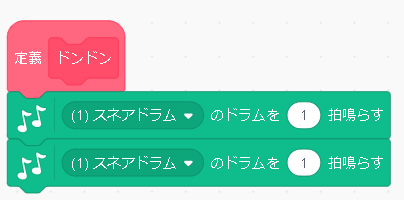 |
ブロックを定義し、その中で音符のリズムを作ります。 拍を変えたり、休むブロックを使うことで幅が広がります。 |
| 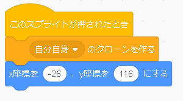 |
最後に、同じ小節を何度も使えるようにするために、 一回クリックをする（スプライトを押す）と、クローンを作成します。 クローンを並べて同じ小節を繰り返し使えるようになります。 |